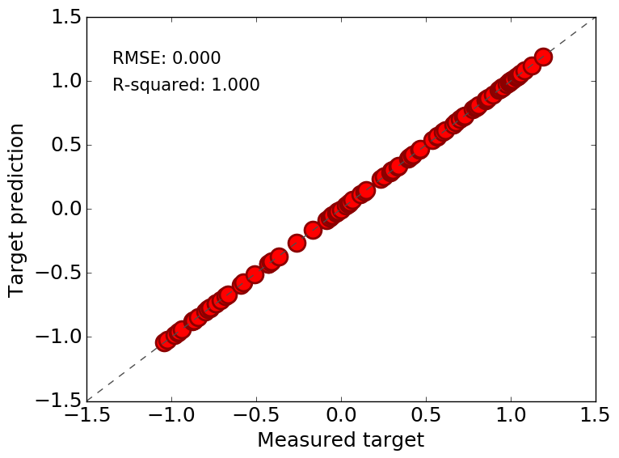

MAST Machine Learning Output
2017-06-26, 14:10:28
Favorites
OPTIMIZED_PARAMS
from test
ParamOptGA_dt_DecisionTreeRegressor0
single_fit.png
from test
SingleFit_fromparams_DecisionTreeRegressor0

Setup
Log file
Config file